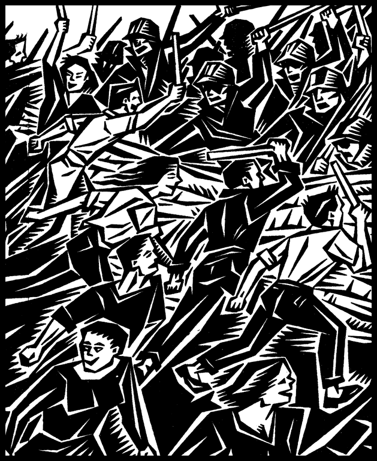

Program Kerja

Saya sudah menjelaskan bahwa kita membutuhkan platform untuk federasi. Tuntutan minimum tidak lain adalah program kerja yang nyata dari federasi kota. Namun karena program kerja adalah urusan masing-masing federasi, saya tidak perlu banyak ikut campur. Terserah mereka hendak melakukan apa. Namun saya akan memberikan sedikit saran.
Program kerja tidak boleh melanggar prinsip-prinsip federasi. Prinsip-prinsip itulah yang membedakan kita dengan organisasi ekstra-kampus yang lainnya. Ia adalah manifestasi konkret dari ideologi sosialis libertarian. Melanggar prinsip tersebut berarti bertindak kompromis. Tapi, sejak kapan kita tidak boleh berkompromi? Maksud saya, tidak akan ada sanksi terhadap pelanggaran tersebut, apalagi jika mempertimbangkan situasi yang dihadapkan pada masing-masing federasi berbeda.
Sebagai organisasi mahasiswa, maka tidak mungkin pula ia menjadi menara gading yang jauh dari sawah, atau hanya menjadi gading tak berguna saat di tengah-tengah sawah. Ia perlu mengimbangi keduanya, antara kampus dan kampung, antara ruang kelas dan pabrik-pabrik, antara laboratorium dan ruang-ruang kota termarjinalkan. Berpropaganda, kita harus berada di tengah rakyat, dan di dalam asosiasi-asosiasi pekerjalah para pekerja dan serikat- serikat petani, kita menemukan rekan seperjuangan dan khususnya mereka yang paling bersedia untuk memahami dan menerima gagasan-gagasan kita. Kita juga perlu bergerilya di antara kerumunan mahasiswa yang tanpa arah itu, mengagitasi mereka.
Tak dapat dipungkiri bahwa propaganda dan pendidikan publik akan menjadi program setiap federasi. Publik harus mengetahui sedalam-dalamnya mengenai tujuan jangka panjang kita. Gelar “intelektual muda” mungkin akan membuat kesan bahwa diri kita merasa lebih tinggi dan kita memiliki tanggungjawab tertentu. Namun ini seharusnya tidak membuat kita untuk menyangkalnya, justru kita harus menyesuaikan diri dengan predikat tersebut. Publikasi-publikasi harus menunjukan kebenaran ilmiah yang mendalam, argumentasi dari fondasi kokoh, dengan landasan teoritik yang memadai.
Namun, sekalipun kita dapat berpropaganda sebanyak yang kita inginkan pada masyarakat dan teman-teman mahasiswa, upaya ini tidak akan memiliki dampak yang berarti pada mereka selama bahasa dan istilah yang kita gunakan terlalu mengawang-ngawang. Di samping segelintir orang-orang yang lebih terdidik dan memiliki kemampuan pemikiran abstrak dan entusiasme teoritis, para pekerja tidak dapat mencerna dan sampai pada anarkisme hanya dengan sekali-dua kali interaksi.
Ia harus jelas tanpa melakukan penyederhanaan yang berlebihan. Karena itu yang paling penting: praktek!
Pemerintahan Mahasiswa
Lembaga kemahasiswaan akan menjadi laboratorium yang menarik untuk menciptakan masyarakat kampus yang anarkis. Jika mahasiswa melihat dan mengalami langsung praktik egalitarian dalam pengambilan keputusan pada pemerintahan mahasiswa (student government), maka ia akan menjadi propaganda yang lebih efektif ketimbang menempel poster dan membagikan selebaran.
Apakah bisa? Kita tidak tahu, tetapi kenapa tidak mencobanya?
Contoh menarik pernah dilakukan oleh kamerad-kamerad di UGM dalam upaya gagalnya membubarkan BEM KM UGM dan menggantikannya dengan swa-pemerintahan mahasiswa (student self-government), yaitu pemerintahan dari bawah, langsung oleh mahasiswa. Pembubaran itu tentu saja gagal,
" Jika mahasiswa melihat dan mengalami langsung praktik egalitarian dalam pengambilan keputusan pada pemerintahan mahasiswa (student government), maka ia akan menjadi propaganda yang lebih efektif ketimbang menempel poster dan membagikan selebaran. "
sebab mereka tampaknya tidak membangun basis massa mahasiswa yang kuat di tingkat rumput. Jika mereka sudah berhasil membangunnya, maka ia akan menjadi apa yang disebut oleh Murray Bookchin sebagai kekuatan ganda (dual power) terhadap kekuasaan lembaga kemahasiswaan formal.
Di saat itulah, mungkin saja, walau belum mempunyai kekuatan politik yang resmi, ia punya kekuatan moral untuk mempengaruhi lembaga kemahasiswaan dari luar. Sehingga, cepat atau lambat, lembaga kemahasiswaan akan tunduk di bawah majelis mahasiswa demokratik, atau bubar dengan sendirinya.
Sementara itu, penghancuran dari dalam pernah dilakukan oleh kamerad kita di Untidar, Magelang. Ya, seorang mahasiswa anarkis, Krisnaldo Triguswinri berhasil merombak ulang tata pemerintahan mahasiswa segera setelah ia menjabat sebagai Ketua BEM. Walau hanya bertahan satu tahun, ini bukti eksperimen yang berhasil. Hebatnya, justru dari dalam. Berdasarkan dari diskusi dengan mereka, saya bisa mendengar bagaimana upaya mobilisassi mahasiswa menjadi sangat masif, bahkan walau tanpa adanya kekuatan yang tersentralisir yang elitis. Sayang, kabar baik ini tidak segera menyebar, macam revolusi yang senyap. Saya tidak tahu penyebab kegagalan tersebut. Namun tampaknya mereka bermasalah dengan sistem perwakilan.
Eksperimen di Untidar mungkin bisa dianggap sebagai bentuk kompromi terhadap prinsip-prinsip anarkisme. Namun, elektoral dan negara adalah dua hal yang berbeda. Janet Biehl, murid dan rekan Bookchin, dalam bukunya Politik Ekologi Sosial – Munisipalisme Libertarian1 yang telah diterjemahkan ke dalam Bahasa Indonesia, menjelaskan bahwa gagasan Bookchin ini harus dipahami dengan membedakan antara bidang politik, sosial dan negara. “Partisipasi dalam pemilihan munisipal dan dewan kota,” tulis Biehl, “hampir berbeda dengan Ke-Negara-an, terutama ketika gerakan libertarian secara sadar mengarahkan partisipasi ini menentang Negara.” Penentangan terhadap negara memang sangat diharuskan, tetapi
Biehl mengakui bahwa karya-karya Bookchin terbit di media-media yang susah ditemukan, dan pada banyak hal sangat susah dipahami. Oleh karena itu Janet Biehl melalui buku tersebut berupaya merangkum dan mengartikulasikan pemikiran Bookchin, tanpa bermaksud untuk menafsirkan, menganalisa atau menilainya. statisme (sikap mendukung negara) bukan hal yang sama dengan elektoralisme.
Karena itu, menggunakan jalur pemilihan untuk menghancurkan negara bukanlah cara yang harus dihindari. Bentuk pemerintahan mahasiswa macam apa yang kita inginkan, bisa kita diskusikan nanti, saya hanya fokus mengenai pandangan anti-elektoral yang banyak dianut anarkis saat ini. Sikap anti-elektoral pernah direfleksikan ulang rekan-rekan anarkis Spanyol kita. CNT-FAI pernah menyerukan anggotanya untuk ikut dalam pemilihan dan membentuk pemerintahan koalisi pada 1937 dan berbagai konsesi yang mereka berikan untuk memperkuat komunis demi tujuan perang di Spanyol.
Selain itu, banyak anarkis di Amerika yang mendukung politis Bernard Sanders, yang membawa aspirasi anarkisme dan menghancurkan sistem dari dalam.
Tetapi tentu saja membandingkan kampus dengan negara adalah jelas suatu kesalahan.
Pertama, pemerintahan mahasiswa bersifat lokal, karena itu segala pejabat-pejabatnya bisa dikontrol dan diawasi langsung oleh mahasiswa. Berbeda dengan negara, dengan segala perangkat dan administrasi yang membuatnya menjadi tidak terjangkau oleh rakyat, pemerintah yang sebenarnya.
Kedua, pemerintahan mahasiswa tidak memberikan banyak peluang yang membuat pejabat mahasiswa menjadi korup, dan karena mendapat kontrol yang ketat dari atas, yaitu pejabat rektorat.
Sementara itu negara adalah instrumen kekuasaan yang mengatur sumber daya yang sangat besar, tidak ada yang mengontrol lagi kecuali perjanjian internasional dan korporasi-korporasi.
Godaan bagi politik kenegaraan jauh lebih hina, kotor, dan rusak. Sementara politik kampus, dengan semangat yang membara dan idealisme, jauh dari huru-hara macam itu.
Karena itu, upaya membentuk swa-pemerintahan mahasiswa dengan swa-pemerintahan yang sesungguhnya jelas berbeda. Namun ini bisa menjadi pengalaman berharga bagi mahasiswa untuk membawa perubahan yang sama ke dalam masyarakat. Ini juga bentuk tertinggi propaganda dengan perbuatan (propaganda by the deed).
Di Tengah-Tengah Masyarakat
Untuk menjadi anarkis yang teguh, dan bukan hanya sekedar slogan, para pekerja harus mulai merasakan solidaritas yang menyatukan mereka dengan rekan seperjuangannya, dan belajar bekerjasama dengan orang lain untuk memperjuangkan kepentingan bersama dan, dengan berjuang melawan para bos dan pemerintah di belakangnya, para pekerja harus menyadari bahwa bos dan pemerintah adalah parasit yang tak berguna dan bahwa para pekerja dapat mengelola
ekonomi domestiknya dengan upaya dan kemampuannya sendiri. Saya punya pengalaman indah saat aksi pemasungan kaki petani Rembang di pusat kekuasaan republik, depan Istana Merdeka. Puluhan petani dari Pegunungan Kendeng mencor kaki mereka dengan semen, dan menolak membongkarnya bahkan walau jari-jari kaki mereka terluka dan membengkak.
Mereka sebisa mungkin bertahan hingga pabrik semen benar-benar dibatalkan. Ini langkah paling akhir dan putus asa dari beragam cara dalam perjuangan panjang mempertahankan pegunungan kendeng dari eksavator kapital yang hendak mengeruk karst. Semua lembaga dan perorangan, secara kolektif bersolidaritas memberikan segala bantuannya. LBH Jakarta menyediakan tempat menginap bagi petani.
Beberapa organisasi, mulai dari serikat buruh hingga organisasi lingkungan menyediakan pikap untuk transportasi. Mereka yang tidak dapat hadir, menggalang dana melalui rekening, dan pesan penggalangan disebar ke grup-grup chat dan media sosial. Uang hasil penggalangan dana tersebut kemudian dibelikan makanan dan bahan-bahan logistik lainnya. Sementara mereka yang tidak bisa memberikan bantuan keuangan dan barang, memberikan tenaga fisik mereka yang dengan bersemangat mengangkut petani-petani yang dicor kakinya untuk pulang-pergi Monas. Tanpa bermaksud meromantisir, otot-otot kelas pekerja –salah satunya dari serikat buruh transportasi kapal- membuat proses pengangkutan logistik dan petani menuju Monas dan sebaliknya menjadi lebih mudah dan cepat dilakukan.
Tidak sampai di situ, ada beberapa tindakan-tindakan kecil lain yang penting dan tidak kalah berarti. Seperti seseorang memberikan salak dan semangka kepada petani. Aktivis lingkungan mengumpulkan sampah dan menyediakan air isi ulang untuk meminimalisir penggunaan botol plastik air mineral sekali pakai. Aktivis buruh, seniman, petani dari berbagai daerah, mahasiswa, keluarga korban 98 dan penyelenggara kamisan, semuanya secara bergilir memberikan orasi solidaritasnya. Sementara seorang teman yang lain, bukan jurnalis media, tapi fotografer handal, mengabadikan momen-momen aksi dan mengunggahnya ke internet. Selebihnya, di kala senja, Marjinal memainkan musik yang memberikan semangat dan penghiburan di kantor LBH Jakarta.
Keramaian tersebut juga terjadi di dalam telepon seluler saya. Saya punya empat grup chat besar dengan orang-orang dan tujuan tertentu dan semuanya ramai dengan hiruk pikuk aksi petani Kendeng. Pesan-pesan penggalangan dana dengan penanggungjawab dan nomor rekening berbeda-beda, hasil rapat para relawan peserta aksi, barang-barang yang dibutuhkan petani, serta gambar hasil swa- foto tersebar di grup-grup tersebut.
Setiap orang punya kebebasan untuk membantu sesuai dengan kemampuan dan keinginannya. Di dalam anarkisme, ini adalah bentuk perayaan individualitas paling tinggi. Kebebasan tidak dipandang sebagai konsep filosofis abstrak, melainkan peluang konkret vital bagi setiap manusia untuk mengembangkan sepenuhnya segala daya, kapasitas, dan talenta yang telah diberikan alam kepadanya, dan mengubahnya menjadi potensi yang sejati.
Hal menarik lainnya dari aksi petani Kendeng adalah tidak adanya hirarki atau otoritas tertentu yang terpisah dan berkuasa kepada kelompok sukarelawan yang lain. Semuanya berjejaring dengan kolektif akar rumput, tanpa sebuah kewenangan yang tersentral. Sepulang aksi dari istana, perwakilan petani dan JMPPK, dari berbagai macam kelompok, melakukan pertemuan untuk mengevaluasi hasil aksi pada hari itu dan merencanakan aksi untuk keesokan harinya di lantai tiga kantor LBH Jakarta.
Pengambilan keputusan dilakukan secara egalitarian dengan mengutamakan konsensus. Sementara di lantai bawah, terhampar petani-petani Kendeng sedang beristirahat seperti setumpuk ikan pindang di pasar. Didekatnya terdapat dapur umum tempat kebutuhan konsumsi dilakukan dengan bahan pangan yang disumbangkan dari berbagai individu atau organisasi.
Hal ini berbeda dengan apa yang dilakukan negara –salah satu institusi hirarkis yang menindas- dimana pengambilan keputusan yang berpengaruh langsung pada kehidupan orang banyak terletak pada segelintir orang. Ini bertentangan dengan hasrat alamiah kebebasan untuk menentukan yang terbaik bagi dirinya sendiri dan bagi orang lain. Begitu pula dengan metode kepartaian yang biasa dipakai oleh kelompok kiri orthodoks, ketika nasib untuk mewujudkan kondisi yang lebih baik bagi kelas pekerja justru sangat bergantung pada elit partai dan perwakilan pekerja di parlemen.
Jelas sekali bahwa fenomena ini terjadi bukan karena secara teoritis mereka –pendukung dan petani Kendeng- memiliki pemahaman anarkisme, tetapi karena keterbatasan sumber daya tentunya, yang memancing aktor-aktornya untuk memikirkan cara supaya gerakan petani Kendeng bisa bertahan dan berkelanjutan. Keberhasilan taktik gerakan sosial yang mampu memicu solidaritas sangat luas ketimbang kebanyakan gerakan lain yang bergerak dengan taktik konvesional, membuat dukungan dan bantuan sumber daya dari beragam kelompok kepada petani Kendeng mengalir deras. Dukungan dan bantuan yang luar biasa tidak dapat lagi dikelola dengan cara-cara biasa.
Sementara JMPPK sangat kelelahan mengurus gerakan dan beberapa sumber daya yang masuk, masih banyak lagi hal-hal yang tidak dapat mereka kelola sendirian. Karena itu membiarkan ‘yang lain’ berjalan sendiri-sendiri secara swa-kelola tetapi sesuai dengan tujuan yang diinginkan adalah langkah yang sangat tepat sekali.
Dari kesemuaannya itu, hanya satu yang kurang anarkis, pandangan bahwa mereka masih memerlukan negara untuk mencapai tujuan mereka. Agak ironis untuk menyaksikan bagaimana metode-metode anarkis terjadi untuk mencapai tujuan-tujuan yang sama sekali dihindari anarkisme. Mereka masih mengemis kepada negara, meminta belas kasihan, setelah sebuah hirarki koersif maha besar yang bernama negara itu menginjak-nginjak mereka, membakar tenda perlawanan, dan melakukan perusakan permanen pada tubuh ibu bumi? Kalau saya tidak sudi.
" Saat pekerja dan petani memahami hal ini, ia adalah seorang anarkis sekalipun ia sendiri tidak menyebutnyademikian. "
Kebebasan, pengambilan keputusan non-hirarkis yang egalitarian, berbagi sumber daya, mutual aid, koordinasi fleksibel antar kelompok sebelum dan selama aksi, adalah prinsip revolusioner anarkisme layaknya ketika menentang negara dan kapitalisme.
Kondisi ini harus dipertahankan dalam aksi pemasungan petani Kendeng. Sebab, hal ini bisa saja rusak karena segelintir orang yang bermaksud baik menginginkan supaya aksi berjalan efektif dan efisien dengan mencoba mengambil kontrol langsung terhadap dukungan dan bantuan kepada petani.
Tindakan seperti ini, seperti terjadi pada banyak kasus, justru berjalan sebaliknya. Tindakan ini mematikan inisiatif dari luar, karena kehendaknya untuk membantu justru memerlukan persetujuan-persetujuan dari segelintir elit aktivis.
Semua yang sifatnya kesukarelaan terganti dengan kewajiban dengan penugasan. Dan ujung-ujungnya hal ini justru memungkinkan terbentuknya hirarki, baik langsung dalam bentuk struktur-struktur otoritas, atau tidak langsung dalam bentuk perbedaan antara aktivis muda dan tua, atau antara aktivis yang baru saja terlibat dengan yang sudah sejak lama dalam membantu aksi petani Kendeng. Akan butuh waktu lama untuk menerangkan konsep mutual- aid, demokrasi konsensus, egalitarianisme, masyarakat paska- kelangkaan, kepemilikan bersama dsb.
Mereka akan paham dalam praktik, ketika solidaritas antar gerakan dilakukan, ketika pengambilan keputusan dilakukan dengan prinsip egalitarian, ketika tujuan jangka panjang dari mereka tidak sekedar mendapat lahan atau peningkatan upah, tapi memiliki pabrik itu sendiri, dan memecat bos mereka! Saat pekerja dan petani memahami hal ini, ia adalah seorang anarkis sekalipun ia sendiri tidak menyebutnya demikian. Tetapi hal ini tidak membuat pendidikan publik yang bersifat teoritik dikesampingkan.
Tulisan-tulisan perlu disebar, diskusi- diskusi digiatkan, perpustakaan jalan dilakukan secara berkala. Tentu saja, dengan bahasa yang mudah dipahami. Sebab saya percaya, semua orang adalah anarkis. Mereka hanya terlalu bodoh untuk tahu dan sadar, terlalu pesimis untuk meyakini perwujudannya, atau terlalu cerdas untuk menolak label hina anarkisme.
Program Integrasi
Kita perlu mempertimbangkan bahwa sebagai mahasiswa di zaman yang menuntut semuanya lulus cepat dan biaya kuliah tinggi, aktivitas yang terlalu militan bisa membuatnya keteteran untuk menyelesaikan kuliah. Karena itu penting bagi kita untuk mempertimbangkan berbagai peluang dan sumber daya terhadap melaksanakan aktivitas kita. Program integratif karena itu menjadi penting.
Apa yang saya maksud dengan program integrasi adalah bagaimana kerja-kerja federasi bisa terlaksana tanpa harus memulainya dari awal, dengan memanfaatkan berbagai sumber daya kampus yang ada. Sebagai contoh, anggota federasi pasti akan ada yang berasal dari pers mahasiswa. Ketimbang federasi mengeluarkan media baru, walau hal itu boleh-boleh saja, akan lebih baik jika anggota federasi yang tergabung ke dalam pers mahasiswa,
menggunakan medianya untuk berpropaganda dengan mengeluarkan tulisan-tulisan yang menekankan pesan anti-otoritarian, atau laporan jurnalistik yang didalamnya mengandung keberpihakan terhadap kelas pekerja. Hal yang sama juga bisa kita lakukan dengan anggota federasi yang tergabung dalam teater, untuk memproduksi naskah drama yang sejalan dengan tujuan itu.
" Pembredelan pers mahasiswa, pembubaran diskusi dan nonton bersama, pelarangan pameran dan pementasan, serta penghadangan demonstrasi, yang rutin terjadi selama beberapa tahun terakhir menjadi terlalu mendesak untuk tidak kita cegah. "
Milisi Mahasiswa
Ya, saya serius. Bahkan kalau perlu mahasiswa bersenjata api. Tapi mengingat kondisi yang belum memungkinkan untuk itu di tengah segala keterbatasan sumber daya, maka pikiran untuk menggunakan senjata api, saat ini, harus kita buang jauh-jauh.
Tapi hal ini tidak menjadi alasan untuk tidak menyusun kekuatan untuk memukul mundur paramiliter reaksioner itu.
Pembredelan pers mahasiswa, pembubaran diskusi dan nonton bersama, pelarangan pameran dan pementasan, serta penghadangan demonstrasi, yang rutin terjadi selama beberapa tahun terakhir menjadi terlalu mendesak untuk tidak kita cegah. Pencegahan tidak dilakukan dengan demonstrasi paska-kejadian, sebab dalam konteks ini, demonstrasi sebenarnya adalah senjata orang-orang kalah. Pencegahan dilakukan sebelum dan saat teman-teman kita melangsungkan kegiatan.
Tanpa bermaksud heroik, tapi kita perlu membentuk barisan mahasiswa anti-fasis. Kita perlu mengorganisir pasukan yang bisa memberikan rasa aman terhadap kebebasan akademik di kampus, yang berani berhadapan secara tatap-muka dengan preman-preman negara itu.
Pelatihan bela diri dilakukan secara sistematis dan berkala, teknik-teknik yang diajarkan adalah teknik bela diri yang melumpuhkan, bukan membunuh. Artinya, kita harus paham bahwa dalam situasi saat ini, maka pelatihan yang harus diutamakan harus bersifat defensif.
Ketika dirasa ada kegiatan yang mungkin akan terancam, milisi ini harus diorganisir, dan kemudian bisa dengan bebas dibubarkan setelah kegiatan selesai. Dalam beberapa hal teknis, nampaknya akan lebih baik jika milisi ini harus didisiplinkan (baca: pembuatan hierarki komando), yang mana harus melanggar keyakinan kita soal kekuasaan dan kepatuhan. Walau ini bisa saja diperdebatkan nanti.
Yang pasti, milisi tidak dibentuk untuk melampiaskan hasrat destruktif dari rekan-rekan mahasiswa. Mereka harus bersikap tenang, dan ketika berhadap dengan kelompok ultra-kanan itu, mereka menunjukkan sikap kooperatif dan intelektual dengan memulai perdebatan yang sehat. Ketika lawan memulai tindakan kekerasan dan memaksa kehendaknya untuk membubarkan suatu kegiatan, maka milisi harus turun tangan. Soal teknis, sekali lagi, bisa dibahas nanti.